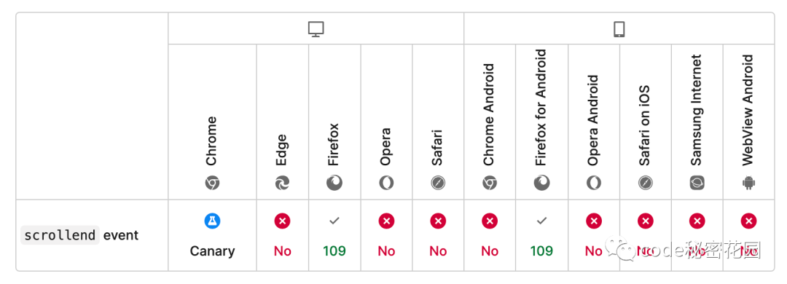

HaoTian · 2024-09-01 15:21:24
今天给大家介绍一个新的 JavaScript 事件：scrollend。
不知道大家在网页开发的过程中有没有遇到过关于滚动事件的痛点，我们可以通过 onscroll 事件来监听浏览器是否发生了滚动，但是我们却很难知道滚动会在什么时候完成，我们可能会写出下面的代码：
document.onscroll = (event) => {
clearTimeout(window.scrollEndTimer);
window.scrollEndTimer = setTimeout(callback, 100);
};
我们只能大概预测滚动是在什么事件完成，比如在上面的代码中我们通过 setTimeout 预估滚动可能在 100ms 后完成，这会导致回调函数可能在滚动过程中，或者滚动结束一段事件之后触发，这样的用户体验肯定是不太好的。
有了 scrollend 事件之后，这样的需求就变得简单多了：
document.onscrollend = (event) => {
// …
};
那么为啥这样一个看起来很简单的事件却花了这么长时间才被 Web 平台支持上呢，其实还是有很多细节需要考虑的。网页视口和滚动的细节其实非常多，假如有一个被放大的网页，你可以在这个状态下进行滚动，但实际上却不一定在滚动文档，即使是这种用户驱动的可视视口滚动交互在完成后也会触发 scrollend 事件。以下是所有 scrollend 事件可能会触发的场景：
scrollTo() 完成。scrollend 事件在以下情况下不会触发：
scrollTo() 没有产生任何位置变化。与其他滚动事件一样，你可以通过多种方式注册事件侦听器：
addEventListener("scrollend", (event) => {
// 滚动结束
});
aScrollingElement.addEventListener("scrollend", (event) => {
// 滚动结束
});
也可以使用事件属性：
document.onscrollend = (event) => {
// 滚动结束
};
aScrollingElement.onscrollend = (event) => {
// 滚动结束
};
如果你现在想要使用的话，建议先检查事件在当前浏览器版本中是否支持：
"onscrollend" in window;
// 可用
if ("onscrollend" in window) {
document.onscrollend = callback;
} else {
document.onscroll = (event) => {
clearTimeout(window.scrollEndTimer);
window.scrollEndTimer = setTimeout(callback, 100);
};
}
这个事件目前已经在 Firefox 109 版本中提供支持，后续其他浏览器也将陆续提供支持：

在还没有提供支持的浏览器版本中，你也可以先使用下面这 polyfill：
https://github.com/argyleink/scrollyfills
import { scrollend } from "scrollyfills";
document.onscrollend = callback;
为了保持页面的运行体验流畅，在滚动事件发生时应该尽量避免复杂的计算逻辑。所以很多需要在滚动时触发的复杂的计算我们推荐在 scrollend 事件中完成。一个比较常见的用例是将相关的 UI 元素与滚动停止的位置进行同步。比如下面的场景将轮播滚动位置与点指示器同步。
你可以在下面这个网站中查看一些真实案例的使用场景和写法：
https://gui-challenges.web.app/carousel/dist/
参考链接